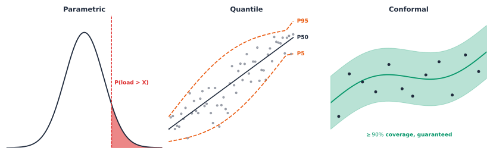
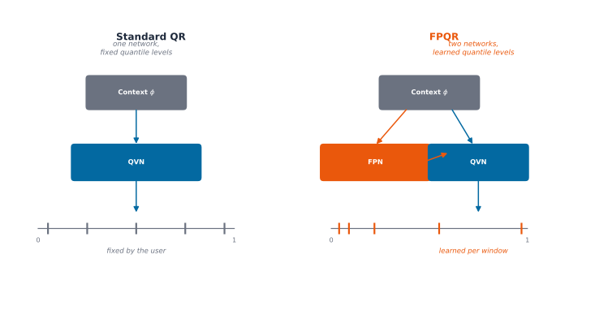

load_data: (342, 365, 48) (customers, days, half-hours)Chapter 3: What a Probabilistic Forecast Is Actually Worth
A model claims its P5-P95 band should miss the real outcome about one time in ten. Trained and evaluated honestly on 342 real AusNet customers below, it misses about one time in a hundred. That is not a rounding error, it is nearly a full order of magnitude away from what the model itself claims, and it is not a hypothetical: it is the first real result this chapter finds, from a model most of this literature would ship exactly as-is.
That is the standard framing every paper in this space still leans on: fit one probabilistic model, report the interval it hands back, and treat that number as though it already means what it claims. This chapter did that above and it was wrong by nearly nine points. The standard framing quietly assumes three things that a real deployment cannot afford to assume. It assumes a model’s own stated uncertainty is trustworthy without being checked against what actually happened. It assumes whichever one architecture a given paper happens to use is representative of the real difficulty, not an artifact of that specific model. And it assumes a result found on one real population transfers to a different one without being tested.
Four chained questions, each pushing past what the standard framing can answer:
- Does a model’s own stated uncertainty, parametric or quantile, mean what it claims, or does it need calibrating before it can be trusted at all?
- Does calibrating per Chapter 2’s own customer archetypes sharpen that calibration, the way archetype-conditioning helped point forecasts, or is that assumption wrong too?
- Is a finding like the nine-point miss above a property of the real data, or an artifact of the one neural architecture that produced it?
- Does any of this, the calibration, the mechanism behind it, hold up on a real population this chapter never trained on?
Borrow, do not invent
Every mechanism below already has a real name and a real precedent. MLPGAMNormal, the parametric backbone, is the author’s own published architecture for net-load forecasting with uncertainty estimates in low-voltage networks [1]. MLPGAMFpqr, the quantile backbone, is FPSeq2Q, fully parameterized sequence-to-quantile regression, the author’s own 2022 architecture, first presented in the author’s own PhD thesis before being generalized in twiga to attach to any neural backbone, not just this one [2]. Split-conformal calibration is Lei, G’Sell, Rinaldo, Tibshirani and Wasserman’s 2018 finite-sample guarantee [3], applied here through the author’s own Conformal-MLPF implementation for low-voltage net-load forecasting with PV generation [4]. NGBoost and QRLightGBM, the second backbone this chapter checks every finding against, are borrowed as-is from their own established libraries, not reimplemented. Nothing here is invented for this chapter; every mechanism is checked directly against real data, not assumed to work because the name is a real one.
The data and the backbone
Same real AusNet pool the whole of Part 8 has used, same last-90-day holdout. Every paradigm below shares one backbone architecture, MLPGAM, so differences in the results come from the probabilistic paradigm itself, not from comparing unrelated architectures.
Key Concept
A point forecast and a probabilistic forecast answer different questions, and the three probabilistic paradigms here answer different questions from each other too. A parametric density is the only one that can price a risk-of-exceedance question directly, since it hands back a full \(\mathcal{N}(\mu, \sigma^2)\) rather than a single number. A quantile forecast is the only one with no distributional assumption baked in, at the cost of needing its own calibration check before trusting it. Conformal calibration is the only one with an actual guarantee: under exchangeability, at least \(1-\alpha\) of a calibration population’s own true outcomes fall inside the interval by construction [3], regardless of whether the underlying model’s own distributional assumptions are correct. None of the three is strictly better; each is the right tool for a different real decision, the same discipline Chapter 6 already applied to comparing detection methods by which real decision they support.
Both neural paradigms above share one backbone, MLPGAM, Generalized Additive Model-inspired MLP [1]. Its own forward computation is genuinely additive, not a metaphor: \[ \hat{y}_{i,t+h} = g\Big(W_p \cdot \text{MLP}_p\big(x_{i,t-L:t}\big) + W_f \cdot \text{MLP}_f\big(c_{i,t:t+H}\big) + b\Big) \] \(\text{MLP}_p\) encodes the real lookback window, \(\text{MLP}_f\) encodes any known-future covariates over the forecast horizon, and the two encodings are summed, not concatenated, through their own separate linear projections \(W_p\) and \(W_f\) before a shared bias \(b\), the additive structure the model’s own name refers to. An L1 (Lasso) penalty on both projection weights encourages sparsity. This chapter never populates \(c_{i,t:t+H}\): every window below is the raw lookback sequence alone, so the \(W_f\) term sits inactive throughout, a deliberate scope choice explained just below, not a limitation of the architecture itself.

Chapters 1 and 2 both fed a model a small, hand-picked table of features: the most recent reading, the same half-hour a day ago, two days ago, a week ago, plus the half-hour and the day of week. That recipe works well for a tree model like LightGBM, which reasons about a fixed set of columns one split at a time. MLPGAM reasons differently: it is a sequence model, and it expects a real, continuous stretch of a customer’s own history as its input, not a curated handful of lag columns. Each training window here is one full real day of lookback immediately followed by the real day the model has to forecast, and the network is left to learn whatever temporal structure, daily rhythm, the slow decay of yesterday’s influence on today, actually matters, directly from that raw sequence, rather than being told in advance which four or five moments in the past are worth looking at.
Worth being explicit about what this chapter does not do. Every window below is built from the raw target sequence alone, build_windows() never constructs a calendar or exogenous channel of any kind, so every model in this chapter trains with zero engineered features, not even the half-hour or day-of-week columns Chapters 1 and 2 leaned on. That is a deliberate scope choice, not a limitation of MLPGAM itself: the architecture’s own \(\text{MLP}_f\) term above exists specifically to take calendar and known-future covariates, DataPipelineConfig’s own calendar_features field supports them directly. Isolating “does the probabilistic paradigm itself matter” from “does feature engineering matter” is the reason for leaving that capability unused here, not an oversight, and it means every comparison in this chapter is a fair one: no paradigm and no backbone gets an unstated feature-engineering advantage over another.
The parametric density
The first paradigm asks MLPGAM to output two numbers for every half-hour of the forecast horizon, not one: a mean \(\mu_{i,t+h}\) and a scale \(\sigma_{i,t+h}\), together describing a full Normal density \(\mathcal{N}(\mu_{i,t+h}, \sigma_{i,t+h}^2)\) over that customer’s own load at that moment. Training looks different too: rather than minimizing a pointwise error like MAE or MSE, the network is trained to maximize the Normal log-likelihood of the real observed load under its own predicted density, so it is rewarded directly for getting both the center and the spread of its own uncertainty right, not just the center. That extra output is not free, and it is not free for a good reason: a real operational question like “what is the probability this customer’s load exceeds 3 kW tomorrow evening” has a genuine, closed-form answer once \(\mu\) and \(\sigma\) are known, something a single point forecast can never provide on its own, however accurate that point happens to be.
A single test day makes this concrete rather than abstract, chosen honestly: the real held-out window with the largest true dynamic range, not hand-picked for a nice-looking result. The dashed line is the real truth; the shaded band is the model’s own claimed 90% interval, mean \(\pm\) 1.645 standard deviations, before any calibration at all.
Checked against the full test set, not just the one day above, this raw band over-covers too: 95.9% empirical coverage against the 90% it claims. Less dramatic than the quantile paradigm’s own 99.0% below, but the same direction and the same real problem, an uncalibrated model’s own stated uncertainty running wider than it needs to, at real operational cost. Both paradigms sharing that direction, checked directly rather than assumed, is itself a real finding: it is not one architecture’s quirk, and it is exactly what the calibration step below exists to fix in both.
The quantile forecast
The Normal head above buys a full density, but it buys it by assuming the residuals actually follow a Normal shape, symmetric, thin-tailed, fully described by just a mean and a spread. Real household load does not always oblige that assumption: evening peaks can be sharper on one side than the other, and a handful of unusually large readings can sit well outside anything a Normal curve expects. MLPGAMFpqr, the FPSeq2Q architecture, sidesteps the assumption entirely. Rather than fitting one distributional family, it is trained with a pinball loss across several quantile levels at once, each level penalized separately for over- or under-shooting the real outcome, so the model learns the P5, the P50, the P95, and everything between directly from the data’s own real shape, whatever that shape turns out to be. The practical payoff is a direct answer to a capacity question a Distribution System Operator (DSO) actually asks, “what P95 load must a transformer be sized to survive,” without ever assuming the underlying noise looks Gaussian.
Key Concept
Standard quantile regression fixes the quantile levels \(\tau\) in advance, evenly spaced by convention, and learns only the values \(Q_\theta(\tau)\) at those fixed levels. QRLightGBM, elsewhere in this chapter’s own backbone comparison, is exactly that: five fixed levels, \(\tau \in \{0.05, 0.25, 0.5, 0.75, 0.95\}\), chosen once and never revisited. FPQR parameterizes both pieces instead, a Fraction Proposal Network (Fraction Proposal Network (FPN)) that learns where to place the levels, and a Quantile Value Network (Quantile Value Network (QVN)) that learns the values at those learned levels: \[
\hat\tau_\theta^{1:N} = \text{cumsum}\big(\text{softmax}(\text{FPN}(\phi))\big)
\] \[
Q_\theta(\hat\tau_\theta) = \text{QVN}(\hat\tau_\theta, \phi)
\] so the model can concentrate quantile levels wherever a customer’s own conditional distribution actually needs finer resolution, a sharper tail, a steeper rise, rather than spending five fixed levels evenly whether or not the data calls for it.

The same real test day as the parametric plot above, now with FPQR’s own raw P5-P95 band instead.
Look at the real gap between what FPQR’s own P5-P95 band claims and what it actually delivers: close to 99% empirical coverage against a nominal 90% target. Nearly one in ten “misses” the model itself was designed to allow for essentially never happens; the interval is far wider than it needs to be, at real operational cost, since a transformer sized to a needlessly inflated P95 is a transformer over-built for the actual risk. A raw, uncalibrated model’s own stated uncertainty, in other words, does not automatically mean what it claims to mean, in either the parametric or the quantile paradigm, and that real gap between the claimed and the actual is exactly the problem split-conformal calibration exists to close, next.
Split-conformal calibration
FPQR’s own over-coverage above raises an honest question about the parametric head too: MLPGAMNormal already outputs a full \((\mu, \sigma)\) for every forecast, so why not just trust \(\sigma\) as a calibrated interval on its own, the way the raw FPQR band was trusted a moment ago, and just proved untrustworthy? The answer is to stop trusting either model’s own stated uncertainty at face value and calibrate it instead, using the exact same split-conformal machinery Chapter 2 already built for the archetype confidence gate, reused verbatim here, not reimplemented for a second time. The idea is to hold back a calibration slice of real customers, measure how far their true outcome actually sat from the model’s own prediction relative to its own claimed scale, and use the resulting empirical distribution to correct the interval directly: \[ \tau = \text{Quantile}_{1-\alpha}\Big(\Big\{\, \frac{|y_j - \mu_j|}{\sigma_j} : j \in \text{calibration set} \,\Big\}\Big) \] \[ [\mu_i - \tau\sigma_i,\ \mu_i + \tau\sigma_i] \] This is a scaled non-conformity score, dividing each calibration residual by that same customer’s own predicted \(\sigma\) rather than using an unscaled residual directly, so a customer the model is already unsure about does not get penalized twice. The resulting guarantee is a real, finite-sample one, not asymptotic and not dependent on the Normal assumption being correct: Lei, G’Sell, Rinaldo, Tibshirani and Wasserman formalized exactly this result in 2018 [3], under exchangeability, at least \(1-\alpha\) of a calibration population’s own true outcomes fall inside the resulting interval by construction, regardless of whether the underlying model’s own distributional assumptions happen to be right.
The exact same test day, one more time: the calibrated band, \(\tau\) now rescaling mean \(\pm\) sigma directly rather than the raw 1.645 multiplier above.
Calibrating per archetype
A single global \(\tau\) treats every one of the 342 real customers as interchangeable for calibration purposes, which is a strange thing to do in a book that spent an entire chapter arguing customers are not interchangeable. Chapter 2’s own real archetypes are already sitting right there, already computed, already validated on this same population, so the natural next question is whether calibrating separately per archetype, rather than once globally, produces a sharper interval at the same 90% guarantee. This is not a new idea invented for this chapter: the author’s own exploratory notebook tried exactly this, calibrating per cluster instead of using one global threshold, though it built a fresh Uniform Manifold Approximation and Projection (UMAP) and Gaussian Mixture Model (GMM) clustering pass just to run that check. Reusing Chapter 2’s own already-computed archetypes here instead avoids that duplicated clustering effort entirely.
Concretely, one threshold \(\tau_k\) per archetype \(k\), calibrated only on that archetype’s own calibration customers, applied only to that archetype’s own eval customers: \[ \tau_k = \text{Quantile}_{1-\alpha}\Big(\Big\{\, \frac{|y_j - \mu_j|}{\sigma_j} : j \in \text{calibration set},\ \text{archetype}(j) = k \,\Big\}\Big) \] \[ [\mu_i - \tau_{k(i)}\sigma_i,\ \mu_i + \tau_{k(i)}\sigma_i] \] the same global formula above, just restricted to one archetype’s own calibration slice at a time, where \(k(i)\) is customer \(i\)’s own archetype. The real question is checked honestly below rather than assumed to come out sharper just because conditioning on more information usually sounds like it should help.
Both approaches hit the 90% coverage target they were calibrated for, so neither one is broken in the sense of failing its own guarantee. But per-archetype calibration is measurably wider than the single global threshold, the opposite of what Chapter 2’s own archetype-conditioning idea delivered when the question was point-forecast accuracy rather than interval calibration. That is a real, checked result, not the expected one, and it is worth understanding exactly why rather than filing it away as a curiosity. Two real diagnostics, computed directly on this same model and this same calibration split, explain the mechanism.
MLPGAMNormal’s own predicted \(\sigma\) is essentially constant across every archetype, the model has not learned much real heteroscedasticity by customer type. Real per-archetype differences do show up, but in \(\tau\), not \(\sigma\): \(\tau\) ranges from roughly 0.77 to 1.00 across archetypes against a global 0.82. Calibration only needs the tail of a calibration set, the top 10% of scores, to estimate \(\tau\) at \(\alpha=0.1\); splitting an already-modest calibration set five ways shrinks that effective tail sample per archetype, adding real quantile-estimation noise that outweighs whatever conditioning benefit archetype membership might otherwise offer. The archetypes were built for shape similarity in Chapter 4, not for residual-scale heterogeneity, and here, checked directly, they do not transfer to this different question.
Does the backbone matter?
Every result above shares one architecture, MLPGAM, on purpose: differences in the numbers come from the probabilistic paradigm, not from comparing unrelated models. That is also a real limitation. FPQR’s own nine-point over-coverage, the near-constant learned \(\sigma\) that made per-archetype calibration backfire, either could be a genuine property of this data, or an artifact of this one neural architecture. The only way to tell the difference honestly is to run the same three paradigms through a completely different kind of model and check whether the same findings hold up.
NGBoost and QRLightGBM are that second backbone: gradient-boosted trees, not a neural sequence encoder, trained on exactly the same raw lookback window, no calendar features here either, evaluated with the same Uncertainty Quantification (UQ) machinery already built above. Conformal calibration wraps trivially over either backbone’s own residuals, ConformalResidualFitting for NGBoost’s \((\mu, \sigma)\) output, ConformalQuantileRegressor for QRLightGBM’s quantile output, so this is a genuine backbone-for-backbone swap, not a reimplementation.
Same test day as every plot above, tree backbone this time: NGBoost’s own parametric band, then QRLightGBM’s own raw quantile band, directly comparable panel-to-panel against MLPGAM’s own versions further up the chapter.
Two real findings, not one. First: NGBoost’s point MAE (0.2616) actually beats MLPGAM’s own (0.3627), despite training on a 5,000-window subsample, roughly 5% of the pooled training data MLPGAM used. Second, and more central to this chapter’s own question: QRLightGBM’s raw quantile band under-covers, 0.824 against a 0.90 nominal target, the opposite miscalibration direction from FPQR’s 0.990 over-coverage on the neural backbone. That is a direct answer to the question this section opened with: the direction of raw miscalibration is backbone-specific, not a fixed property of this data, one architecture over-promises, the other under-delivers. What does not change with the backbone is that conformal calibration fixes both: CQR brings QRLightGBM’s band to 0.900 coverage, matching MLPGAM’s own calibrated 0.899, from opposite starting points. The lesson is not “trust one backbone’s raw uncertainty over the other,” it is that neither backbone’s raw uncertainty should be trusted without calibration, regardless of which direction it happens to be wrong in.
A single MAE number settles less than it looks like it does, though: it says nothing about whether a backbone that wins on average error also wins on correlation, bias, or scale-independent error. The same diversity-weighted, multi-metric ranking Chapter 2 already built answers that more honestly than one column can.
Generalizing beyond AusNet
Every number above comes from one real population, 342 Australian AusNet customers. A genuine generalization check does not retrain on a second dataset and compare two separately-tuned results, it takes the exact models and calibration already fit above, unmodified, and points them at real data they have never seen, from a different country, a different climate, a different tariff structure entirely. NREL’s ResStock buildings are the same real half-hourly resolution Part 8 Chapter 1 already used for exactly this kind of check, complementing AusNet, not replacing it: ResStock is a physics-based simulation calibrated to real US end-use survey data, not a metered reading the way AusNet is, and that distinction matters here as much as it did in Chapter 1.
The point forecast degrades in a way that is not surprising for any of the three backbones: real cost of a different country, climate, and tariff structure none of them trained on. The calibration finding is the one worth sitting with, and it holds for both backbones checked, not just MLPGAM: every conformal wrapper’s own coverage drops hard when applied unmodified to NREL, MLPGAM’s from 0.899 to 0.642, QRLightGBM’s own CQR wrapper dropping in exactly the same direction. Split-conformal’s finite-sample guarantee holds under exchangeability with the calibration population, not in general. Exchangeability means the calibration customers and the customers the interval gets applied to are drawn from the same underlying distribution, so a residual computed on one is as informative about the other as any other pair from that same population; swap two customers between the two groups and nothing about the guarantee’s own math changes. NREL customers are not exchangeable with AusNet customers, a different country, a different climate, a different tariff structure, and the coverage collapse above is exactly what that assumption’s own failure looks like in practice, not an abstract technicality. A conformal interval is not a property of a model alone; it is a property of a model paired with the specific population it was calibrated on, and that holds regardless of which backbone produced the interval in the first place. The practical trigger this points to: recalibrate whenever the deployment population genuinely changes, a new utility, a new region, a materially different customer mix, not on a fixed schedule regardless of whether anything actually shifted.
The same real test day pattern as above, one real NREL building this time, both backbones’ own AusNet-calibrated bands applied completely unmodified.
Both bands visibly struggle in the same direction the numbers already flagged: MLPGAM’s band drifts away from the real trace, and QRLightGBM’s CQR band, calibrated for AusNet’s own tighter residual distribution, no longer tracks a real NREL building’s own different daily shape either. Seeing it, not just reading a coverage number, is what makes “the guarantee does not travel” concrete rather than an abstract caveat.
One honest comparison
Three paradigms have each been checked on their own terms above: a parametric density that prices risk directly but assumes a Normal shape, a quantile forecast that assumes nothing about shape but over-covered by nearly nine points before calibration, and a split-conformal wrapper that delivers an actual guarantee, sharper globally than per archetype. Two metrics beyond MAE, coverage, and width are worth defining before the table below, since both appear in it for the first time this chapter.
Continuously Ranked Probability Score (CRPS) generalizes MAE to a full predicted distribution rather than a single point: it integrates the squared gap between the predicted and true cumulative distributions across every possible threshold, reducing to plain MAE exactly when the forecast collapses to a single point, and rewarding a distribution that is both well-centered and appropriately sharp, not just centered correctly. Lower is better, and it shares load’s own physical units (kW), so a CRPS of 0.27 is directly comparable to an MAE of 0.27, the reason it can rank a parametric density and a full quantile grid on equal footing even though they are shaped completely differently. Winkler score is CRPS’s counterpart for a single interval rather than a full distribution: interval width, plus a penalty of \(2/\alpha\) times the miss distance whenever the true value falls outside it. A wide, safe interval scores poorly for being needlessly wide; a narrow interval that frequently misses scores poorly for missing; only a genuinely well-calibrated, appropriately narrow interval scores well on both counts at once. For a DSO, CRPS is the number to reach for when comparing a parametric density against a full quantile grid regardless of representation; Winkler score is the number to reach for when comparing calibrated intervals specifically, the actual P95 a transformer gets sized against.
Putting all five real numbers per paradigm, MAE, coverage, mean width, CRPS, and Winkler score, into one table makes the full tradeoff visible at once, rather than scattered across separate results a reader has to hold in their head.
Why bother
Three concrete things this chapter buys beyond “another accuracy table.” First, a real basis for trust: a raw model’s own stated uncertainty was wrong by nearly nine points here, in both paradigms, so a DSO sizing a transformer or setting a compliance threshold off an uncalibrated interval is sizing it off a number that does not mean what it claims, calibration is not optional polish, it is the difference between a real guarantee and a plausible-looking one. Second, a real answer to “which backbone should I trust this finding with”: FPQR over-covers, QRLightGBM under-covers, in opposite directions, yet conformal calibration closes both gaps to the same 90% target regardless of which way the raw model was wrong, so the practical lesson travels across architectures even though the raw failure mode does not. Third, a real limit on how far any of this travels: the exact same calibrated interval that holds its guarantee on 342 AusNet customers loses more than a quarter of its coverage on real NREL buildings, for both backbones checked, a finding that would stay invisible without deliberately testing it, and one that matters directly to anyone tempted to ship a calibrated model to a new utility, a new country, or a new tariff structure without recalibrating first.
Where this leaves Part 8
A point forecast alone was never the full deliverable this part set out to build. Chapter 2 found the model that earns its cost; this chapter attached an honest number to how wrong that model’s own forecasts might be, checked whether that number holds across architectures and across populations, rather than assuming it does, and found real limits on both counts worth carrying into any real deployment. Part 8 Chapter 4 checks a different kind of cost: whether a pretrained foundation model, never trained or calibrated on this population at all, still fails on the same customers these trained models do.